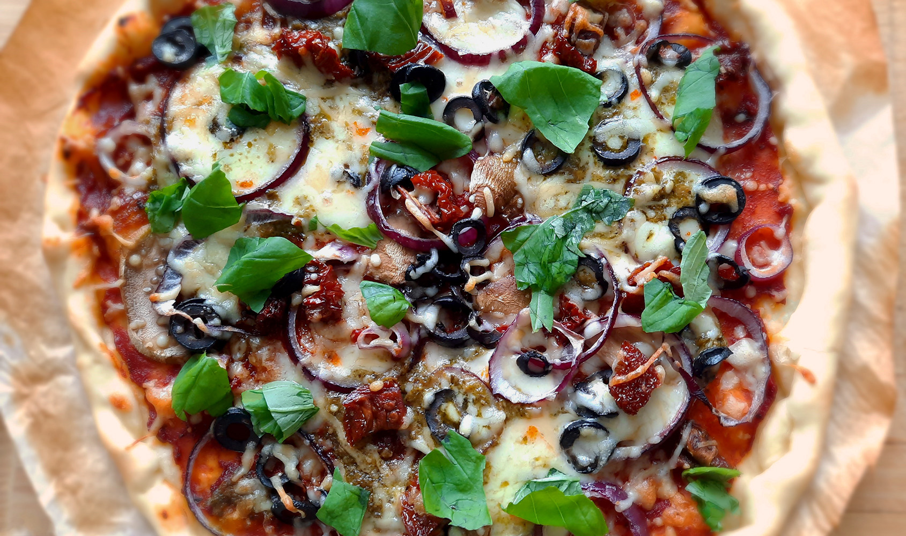

banh xeo hoi an style

japanse beef teriyaki

koreaanse bibimbap

biefstuk chimichurri & gegrilde groenten

bami met spinazie

chili sin carne met guacamole

dadels met spek en kaas

pasta pesto
avocado salade

amerikaanse caesar salade

italiaanse caponata

panzanella
pizza
Gebruik de toppings die je wilt. Ook handig als je restjes over hebt!

Bereidingsduur: 45 minuten
Aantal personen: 2
Ingrediënten:
2 pizzabodems
enkele eetlepels pesto
5 champignons
6 zongedroogde tomaten
10 olijven
1 rode ui
0,5 paprika
125 gram mozzarellakaas
naar smaak geraspte kaas
200 gram tomatenblokjes
1 eetlepel olijfolie
1 eetlepel italiaanse kruiden
1 theelepel knoflook
naar smaak zout en peper
optioneel enkele blaadjes basilicum
2 pizzabodems
enkele eetlepels pesto
5 champignons
6 zongedroogde tomaten
10 olijven
1 rode ui
0,5 paprika
125 gram mozzarellakaas
naar smaak geraspte kaas
200 gram tomatenblokjes
1 eetlepel olijfolie
1 eetlepel italiaanse kruiden
1 theelepel knoflook
naar smaak zout en peper
optioneel enkele blaadjes basilicum
Instructies:
1. Snijd eerst alle groenten in de gewenste grootte. Lees alvast de instructies van de pizzabodems en verwarm de oven voor. Maak de saus door de tomatenblokjes, olijfolie, italiaanse kruiden, knoflookpoeder, zout en peper te mengen en dit te pureren.
2. Beleg de bodem met de saus, mozzarellakaas en dan met de toppings, pesto en geraspte kaas. Verwarm in de oven volgens de instructies van de pizzabodem of tot de kaas begint te smelten.
3. Verdeel eventueel basilicumblaadjes over de pizza.
1. Snijd eerst alle groenten in de gewenste grootte. Lees alvast de instructies van de pizzabodems en verwarm de oven voor. Maak de saus door de tomatenblokjes, olijfolie, italiaanse kruiden, knoflookpoeder, zout en peper te mengen en dit te pureren.
2. Beleg de bodem met de saus, mozzarellakaas en dan met de toppings, pesto en geraspte kaas. Verwarm in de oven volgens de instructies van de pizzabodem of tot de kaas begint te smelten.
3. Verdeel eventueel basilicumblaadjes over de pizza.